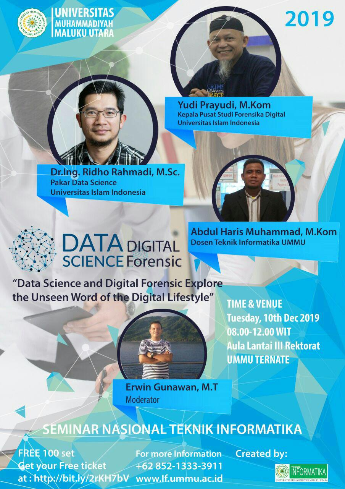

Seminar Nasional dan Tugas UTS
Info !!
*SEMINAR NASIONAL TEKNIK INFORMATIKA*
*Data Science and Digital Forensics (Explore the Unseen World of the Digital Lifestyle)*
Tuesday, 10th December 2019 @ Aula Lantai III Rektorat - Universitas Muhammadiyah Maluku Utara.
</img>
yuk dapatkan tiket gratis https://bit.ly/2rKH7bV (terbatas 100 peserta)
For more information:
Prodi Infoematika Ummu
Wa. 0852-1333-3911
Ketentuan Untuk UTS Pgame :
- UTS untuk MK PGame adalah dalam bentuk TUGAS,
- Tugas UTS, membuat Resume untuk semua Materi Seminar (3 Pemateri)
- Resume dibuat tidak boleh kurang dari 160 kata dan maksimal 500 kata untuk tiap materi.
- Buat file
seminar_npm.md(contohseminar_16000.md) pada github anda dan isi file tersebut dengan rangkuman seminar yang anda ikuti. - Contoh Format Resume dapat dilihat di bawah :
Contoh Format Penulisan Rangkuman Seminar :
- Silahkan isi file
seminar_npm.mddengan rangkuman seminar yang mengikuti format seperti dibawah, sesuaikan semua data dengan data anda dari NPM sampai dengan Isi Materi. Format dibawah hanyalah contoh untuk anda ikuti dalam penulisan rangkuman seminar.
### Dirangkum oleh :
### NPM : 16000
### Nama : Nama_Saya
***
## Materi Seminar I,
### Waktu : 10/12/2019 : 09.00
### Tempat : Aula UMMU
### Durasi : xx Menit, Sesi ke 1
### Nama Pemateri : Yudi Prayudi, M.Kom
### Judul Materi : ?
### Isi Materi :
Catatan saya untuk Materi Seminar yang disampaikan oleh Pak Yudi
saya bagi menjadi bebeapa bagian, bagian pertama beliau berbicara
tentang pengertian forensik digital, menurut beliau forensik
digital adalah bla...bla..bla...dst..., kemudian bagian kedua,
beliau meyinggung tentang pendtingnya bidang
ilmu forensik digitaluntuk era digital seperti saat ini,
rangkuman saya untuk materi seminar I.
karena....dst,
itulah
***
## Materi Seminar II,
### Waktu : 10/12/2019 : 09.00
### Tempat : Aula UMMU
### Durasi : 45 Menit, Sesi ke 2
### Nama Pemateri : Dr.Ing. Ridho Rahmadi, Msc.
### Judul Materi : ?
### Isi Materi :
Catatan saya untuk Materi Seminar yang disampaikan oleh Pak Dr.
Rido, saya dapatkan beberapa poin penting tentang apa yang beliau
sampaikan :
1. Bahwa Data adalah....dst,
2. Data Science merupakan bla..bla..bla...dst..,
3. Data dapat dimanfaatan bla..bla..dst..,